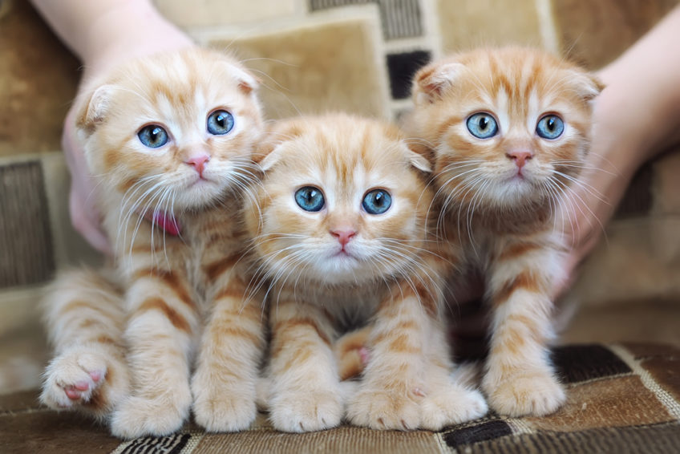

Niech będą białe napisy na czerwonym tle.
Otwieram akapit za pomocą <p>.
Pominąłem w poprzednim akapicie </p>.
Po tym akapicie też pomijam <p>.
Ale to się kurwa rozjeżdża.
Otwieram akapit za pomocą <p>.
Pominąłem w poprzednim akapicie </p>.
Po tym akapicie też pomijam <p>.
Ale to się kurwa rozjeżdża.
Podaj swój nick:
Kliknij aby zobaczyć innego kotka.
